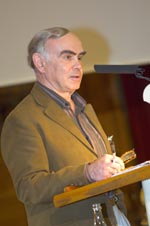

پذيرش > سایت نوشته ها > اعتراض به جلوگيری از شرکت پروين اردلان در مراسم اهدای جايزه اولاف پالمه


 اعتراض به جلوگيری از شرکت پروين اردلان در مراسم اهدای جايزه اولاف پالمه اعتراض به جلوگيری از شرکت پروين اردلان در مراسم اهدای جايزه اولاف پالمه
14 اسفند 1386 - شبکه بين المللی همبستگی با مبارزات زنان ايران - نسخه قابل چاپ
. بر اساس آخرين خبرها، مسئولان حکومتی با ضبط گذرنامه و سپردن پرونده به اداره كل امور گذرنامه در صددند از شرکت پروين اردلان در مراسم اهدای جايزه اولاف پالمه جلوگيری کنند . هدف اين اقدام فقط بستن دست و دوختن دهان فعالان جنبش های مدنی در ايران است وافکندن حجاب بر چهره زنانی چون پروين اردلان تا ندای حق خواهی زنان ايران نتواند چنان که شايسته است در جهان طنين اندازد. ما با مراجعه به همه نهاد های مدافع حقوق بشر و طرف دار آزادی و برابری زنان خواهان فراهم آوردن شرايطی هستيم که پروين اردلان امکان يابد پيش از ششم مارس شخصا برای دريافت جايزه اولاف پالمه در استهکلم حضور يابد.
شبکه بين المللی همبستگی با مبارزات زنان ايران
سوم مارس ٢٠٠٨
* * * * * * * * * * *
بازتاب ممنوعیت خروج پروین اردلان از ایران در سوئد / مهشید راستی - استکهلم
مسئله ی ممنوع الخروج شدن پروین اردلان یکی از خبرهای تمام روزنامه های روز و شب امروز سوئد بود. عکسهای پروین اردلان در تمام جرائد سوئد به چشم میخورد.
مسئله ی مورد توجه این است که خلبان هواپیمای ایرفرانس ، به پیاده کردن پروین اردلان با توجه به اینکه پروین از پاس کنترل رد شده است و تمام مراحل خروج را طی کرده ولی در هیچ کدام متوقف نشده است اعتراض کرد ولی اعتراض او به نتیجه ای نرسید. و پروین به دلیل اینکه موجب ناراحتی بقیه مسافران را فراهم نیاورد ، خود به پیاده شدن از هواپیما رضایت میدهد.
آرنه روت Arne Ruth، سردبیر سابق روزنامه ی دی ان که عضو کمیته ی بنیاد اولاف پالمه نیز هست و پیشنهاد اعطای جایزه ی امسال را به پروین اردلان به بنیاد داده بود ، این عمل را تخطی و غصب مقامات ایرانی نامیده است و به مطبوعات گفته است که همه ی مدارک پروین کامل بود و بنیاد منتظر میهمان خود بود.
آرنه روت در مصاحبه با افتن بلادت میگوید : پروین انسان سرسختی است. او بارها دستگیر شده است و مورد خشونت فیزیکی قرار گرفته . این زنان آبدیده هستند.
از قول آرنه روت در روزنامه ی سونسکا داگ بلادت نوشته شده است : تعرضی که به پروین اردلان شد ، از ترس رژیم از جنبش زنان ایران سرچشمه میگیرد. مبارزه ی زنان بر علیه تبعیض قانونی جنسیتی در ایران با مبارزه با آپارتاید در آفریقای جنوبی قابل مقایسه و همپایی است. او همچنین اضافه میکند که جنبش زنان ایران توچه ای را که سزاوار آن است از دنیا دریافت نکرده است.
بیته هامارگرن ، خبرنگار روزنامه ی سونسکا داگ بلاد همچنان اشاره میکند که جنبش زنان ایران جنبشی پرقدرت و صلح آمیز است که خواستار تغییر قوانین مربوط به زنان در ایران است.
پیر شوری Pierre Schori ، دبیر اول بنیاد اولاف پالمه در یک اطلاعیه مطبوعاتی اعلام کرد که مراسم اهدای جایزه ی پروین اردلان طبق برنامه ریزی قبلی صورت خواهد گرفت ، او گفت که ما امیدواریم که دولت ایران در تصمیم خود مبنی بر ممنوعیت خروج پروین اردلان از کشور تجدید نظر کند و او بتواند برای دریافت جایزه ی خود به استکهلم بیاید. در همین رابطه بنیاد اولاف پالمه با سفارت ایران در استکهلم و وزارت امور خارجه تماس گرفته است.
ییته گوته لاند Jytte Guteland ، دختر جوانی که سمت دبیر اول سازمان جوانان حزب سوسیال دمکرات سوئد را به عهده دارد ، امروز همراه چند تن از اعضای سازمان جوانان حزب درحالی که عکس های پروین اردلان و پلاکاردهایی از قبیل " آزادش بگذارید " و " بگذارید برود " را در دست داشتند به جلوی سفارت ایران در استکهلم رفته و خواستار ملاقات با سفیر ایران شدند ولی بعد از چند ساعت معطلی در پشت درب های سفارت به ایشان اطلاع داده شد که سفیر تقاصای ملاقات ایشان را قبول نکرده است .
اخبار مربوط به پروین اردلان امروز بخشی از اخبار کانال های مختلف سوئد را نیز به خود اختصاص داده است.
* * * * * * * * * * *
اعتراض به جلوگیری از خروج اردلان
اعتراض فراکسیون حزب چپ پارلمان آلمان به جلوگیری از خروج پروین اردلان از ایران حزب چپ در پارلمان آلمان یک اطلاعیۀ مطبوعاتی منتشر کرده و طی آن از دولت آلمان می خواهد تا برای خارج شدن پروین اردلان از ایران تلاش کند . خانم Dr. Kirsten Tackmann که سخنگوی امور زنان فراکسیون این حزب در پارلمان آلمان است می گوید آزادی سفر کردن حق انسان و جزو حقوق بشر است و زیر پا گذاشتن آنرا نباید به سکوت برگزار کرد و از دولت آلمان می خواهد تا از راه های دیپلماتیک برای به کرسی نشاندن این حق برای پروین اردلان تلاش کند. پروین اردلان بامداد امروز برای دریافت جایزۀ اولاف پالمه از تهران راهی استکهلم بود، لیکن هنگامی که سوار هواپیمای ایر فرانس شد، بلند گوی هواپیمای وی را فراخواند و ماموران فرودگاه گفتند وی حق خروج از ایران را ندارد.
شبکه بين المللی همبستگی با مبارزات زنان ايران
ارسال به
بالاترین
،
توییتر
،
فریندفید
،
فیسبوک
در همين بخش :
 یک خبر تلخ؟ یک قانونشکنی؟ یک تصمیم بخشنامهای جدید؟ یک خبر تلخ؟ یک قانونشکنی؟ یک تصمیم بخشنامهای جدید؟
چرا بایست به سکسوالیته پرداخت؟ / نفیسه آزاد
آزارجنسی خانگی؛ «قربانی» نه، «نجات یافته»
زنان، بزرگترین بازندگان بهار عرب
سانسور از دیدگاه جنسیتی/الهه امانی
ديگر بخش ها :
طرح یک میلیون امضا
|
مقالات
|
سایت نوشته ها
|
اخبار
|
گزارش كمپين
|
گفت و گو
|
علیه سکوت
|
كوچه به كوچه
|
نامه های شما
|
گزارش ویژه
|
گفتگو با اعضا
|
ویژه سالگرد کمپین
|
تصویر برابری
|
دل آرام علی
|
تریبون
|
مقالات
|
تاریخ شفاهی
|
خارج از چارچوب
|
کتابخانه
|
درباره کمپین
|
کمپین در شهرها
|
کمپین در بند
|
صدای تغییر
|
ویژه 22 خرداد
|
لایحه حمایت از خانواده
|
گالری
|
عشا مومنی
|
امیر یعقوبعلی
|
خدیجه مقدم
|
راحله عسگری زاده و نسیم خسروی
|
پروین اردلان،جلوه جواهری، مریم حسین خواه، ناهید کشاورز
|
زینب پیغمبرزاده
|
سعیده امین، سارا ایمانیان، محبوبه حسین زاده، ناهید کشاورز و همایون نامی
|
احترام شادفر
|
نسیم سرابندی زاده،فاطمه دهدشتی
|
وبلاگ مهمان
|
پرونده خرم آباد
|
دستگیری ها
|
مریم مالک
|
پرستو اللهیاری
|
مهرنوش اعتمادی
|
سمیه رشیدی
|
Other Languages
|
همراهان
|
«فراخوان کمپین ده روز با بهاره هدایت»
| English
|